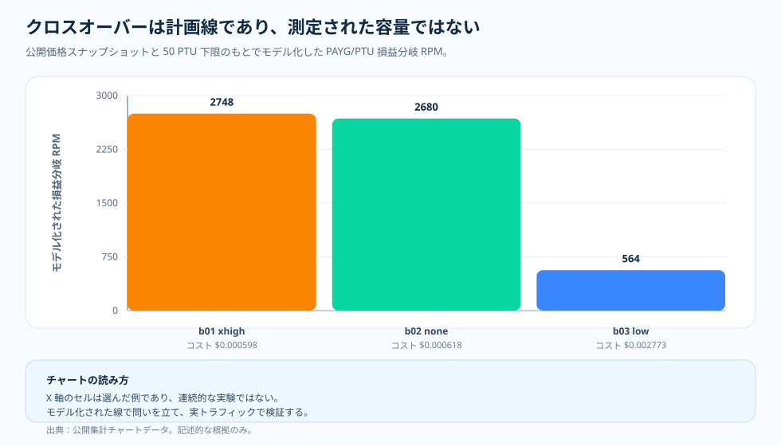

トピック記事 · PTU/PAYG プランニングモデル
PTU/PAYG クロスオーバー：容量の結果ではなく、プランニングの線
どのモデルと推論強度の組み合わせが費用に見合うかは、すでに実測しました。次にトラフィックチームが、翌四半期の予測を基に請求に直結する問いを投げかけます。予測したリクエストレートなら、従量課金（PAYG）のままでよいのか、それともプロビジョニングされたスループット（PTU）を予約すべきなのでしょうか。クロスオーバーの線だけで答えを出したくなりますが、本記事では、その線を価格だけに基づくモデル化された損益分岐として扱います。稼働中の PTU デプロイが負荷下でどう動作するかを実測したものではなく、容量実験を行う価値が生まれる地点を示す目安です。

なぜこれをモデル化したか
クロスオーバーの線には二通りの読み方があり、その二つは結論を別々の方向へ導きます。ひとつは判定として読むことです。線が PTU を指しているのだから PTU を予約すべきだ、という読み方です。もうひとつは、プランニングを始めるきっかけとして読むことです。線は、このワークロードでは PTU のほうが安くなる見込みがあると示しています。だからこそ、このデプロイは容量実験を行う価値がある候補として読めます。私たちは後者の読み方のためにクロスオーバーをモデル化しました。
そうしたのは、この線がごく限られた価格の問いにしか答えないからです。ひとつの価格スナップショットと、測定済みのひとつのリクエストあたりトークン構成を前提にしたとき、固定の PTU 下限が PAYG の請求より安くなるのはどこでしょうか。線が答えるのはそこまでです。デプロイがそのトラフィックを運べるか、429 のスロットリングがどこで始まるか、負荷下でプロンプトキャッシュがどう振る舞うか、p95 レイテンシがどう見えるかは示しません。その価格の答えを容量の答えと取り違えないことが、本記事の狙いです。
そのためこの計算では、意図的に二種類の入力を組み合わせています。一方は日付付きの PAYG と PTU の価格スナップショット、もう一方はベンチマークで測定したリクエストあたりコストとトークン構成です。この組み合わせによって、出力は実測に根ざしつつ価格の問いに限定されたプランニングモデルになり、稼働中の容量結果とは区別されます。
問い
モデル化された PTU/PAYG クロスオーバーは何を語れるのか、何を語ってはいけないのでしょうか。
根拠
二つの日付付き価格スナップショット——pricing/azure-openai-payg-2026-05.yaml と pricing/azure-openai-ptu-2026-05.yaml——を、benchmark-01・-02・-03 で測定したリクエストあたりコストと、トークン構成から導いたスループット係数に組み合わせた損益分岐の計算です。出力はクロスオーバーのチャートデータにある modeled_break_even_rpm の系列であり、測定されたスループットではありません。
わかったこと
この価格スナップショットでは、モデル化された損益分岐の位置は、リクエストあたりの請求額とトークン構成によって決まります。benchmark-01 xhigh はおよそ 2,748 rpm、benchmark-02 none はおよそ 2,680 rpm、benchmark-03 low はおよそ 564 rpm で、いずれも 1 PTU・1時間あたり $2.00、50 PTU の下限を前提としています。これらは価格スナップショットとリクエストあたりのトークン構成に応じて変わる計算値であり、実測した頭打ちの地点ではありません。
判断
クロスオーバーは、このワークロード形状で容量実験を行う価値がいつ生まれるかを示すプランニングの線として読みます。特定のデプロイに PTU が必要だと断定するものではありません。価格・トークン構成・リージョンが変われば、あらためて導出します。

モデルは狭い問いに答える
クロスオーバーの計算では、リクエストあたり平均コスト、トークン構成のスループット係数、公開価格のスナップショット、50 PTU の下限を組み合わせます。出力は、モデル化された損益分岐 RPM です。たとえば benchmark-01 の xhigh はおよそ 2,748 rpm、benchmark-02 の none はおよそ 2,680 rpm、benchmark-03 の low はおよそ 564 rpm です。
これらの数値から、ワークロード形状によって計画がどう変わるかを比較できます。ただし、稼働負荷の実測値ではありません。429 がどこで発生し始めるか、頭打ちに近づいたときにキャッシュがどう動作するか、特定の構成が p95 レイテンシにどう影響するかは示していません。
チャートの読み方
X 軸は選定したベンチマーク行、Y 軸はモデル化された損益分岐 RPM です。棒が高いほど、モデル化された PTU の下限が安く見え始めるまで、PAYG がより高いリクエストレートへ伸びられることを意味します。棒が低いほど、そのワークロードはモデル上のクロスオーバーに早く到達します。
これらの棒は連続的な容量曲線ではありません。公開された集計データと価格スナップショットから導いた、プランニング上の目印です。
この区別が大事な理由
この区別を外すと、クロスオーバーチャートは約束のように誤読されかねません。564 rpm のクロスオーバーを持つ行を見ると「PTU が必要だ」、2,700 rpm のクロスオーバーを持つ行を見ると「PTU は不要だ」と言いたくなります。ですが、根拠が示しているのはもっと限定的な内容です。チャートが語るのは、モデル化した前提のもとで経済性がどう見えるかであって、稼働中のシステムそのものではありません。実運用の判断には、なおレイテンシ、キャッシュ、リトライ、飽和の根拠が必要です。
この慎重さは弱さではありません。むしろ、チャートを実務で使えるものにしています。チャートが教えてくれるのは、いつ容量実験を走らせるべきかまでです。その実験で何が見つかるかまでは教えてくれません。
押さえておきたい要点
PAYG と PTU は、それぞれ別の問いに答えます。PAYG が問うのは、完了した各リクエストにいくらかかるかです。PTU が問うのは、許容できる品質とレイテンシのもとで、固定容量が何をさばけるかです。クロスオーバーの線はその二つの世界をつなぎますが、それらを一つの計測値にまとめるものではありません。
だからこのプロジェクトでは、その線をモデル化された仮説として明示しています。線が属するのは計測されたチャートの上ではなく、その隣です。
根拠の表
| 根拠の行 | 指標 A | 指標 B | 確認できること |
|---|---|---|---|
| benchmark-01 xhigh | モデル化 2,748 rpm | 50 PTU 下限 | 遅めのクロスオーバー：短い事実確認タスクは、xhigh でも安いままです。 |
| benchmark-02 none | モデル化 2,680 rpm | 50 PTU 下限 | 測定されたリクエストあたりコストが低いため、クロスオーバーは遅めです。 |
| benchmark-03 low | モデル化 564 rpm | 50 PTU 下限 | 早いクロスオーバー：ツールエージェントの大きなトークン構成により、各リクエストが高くなります。 |
| 根拠の境界 | モデル化された経済性 | 稼働中の容量ではない | 次に何を試すかを決めるために使います。 |
出典と根拠の境界
上記の損益分岐の数値はいずれも、測定値ではなく計算値です。測定されたリクエストあたりのコストとトークン構成を、二つの日付付き価格スナップショットに当てはめて算出しています。下の二つの Tier は、文書化された入力がどこで終わり、モデル化された出力がどこから始まるかを示すものです。50 PTU の下限を置いた 2,748 rpm のクロスオーバーは導出された計算結果であり、測定されたスループットでも、429 の発生点でも、頭打ちの地点でもありません。
- [1] Tier 1 — 方法論の契約： 本リポジトリ、
docs/05-methodology.md（v1.0）。強度設定あたり N = 20 のサンプル、R = 3 回の反復、公開集計の測定区間のみを対象にしています。リクエストあたりのコスト入力はこの凍結された前提を引き継いでおり、誤差バーは信頼区間ではなく標準偏差です。N = 20 なので p 値は主張しません。 - [2] Tier 1 — PAYG 価格スナップショット： 本リポジトリ、
pricing/azure-openai-payg-2026-05.yaml。出典：Azure OpenAI 価格ページ（2026-05-19 アクセス）· アーカイブ。ここでの 1M トークンあたりの単価（gpt-5.2 input $1.75/1M、cached input $0.175/1M、output と reasoning $14.00/1M、gpt-4o input $2.50/1M、cached $1.25/1M、output $10.00/1M）が、式に入るリクエストあたりの請求を決めます。 - [3] Tier 1 — PTU 価格スナップショット： 本リポジトリ、
pricing/azure-openai-ptu-2026-05.yaml。出典：Microsoft Learn ドキュメント（2026-05-19 アクセス、リージョン eastus2）· アーカイブ。式の PTU 側——1 PTU・1時間あたり $2.00、50 PTU の最小値（下限）、スループット係数に使う PTU あたり Input TPM（gpt-4o 2,500、gpt-5.2 3,400）——はこのスナップショットによります。PAYG と PTU の両方の価格が損益分岐に入ります。一方にはリクエストあたりの PAYG 請求があり、もう一方には固定の $100/hour の PTU 下限（50 × $2.00）があります。 - [4] Tier 2 — 測定されたリクエストあたりの入力： 本リポジトリ、
benchmarks/01-short-factual/analysis.json、benchmarks/02-multi-step-reasoning/analysis.json、benchmarks/03-tool-using-agent/analysis.json。これらが、リクエストあたりの平均コストと、gpt-4o ベースラインに対するスループット利得係数の元になる強度設定ごとのトークン分布を供給しています。 - [5] Tier 2 — モデル化されたクロスオーバーの出力（測定ではなく計算）： 本リポジトリ、
docs/blog/data/chart-data/ptu-payg-crossover/benchmark-01/crossover.json、benchmark-02/crossover.json、benchmark-03/crossover.json。チャートが描くmodeled_break_even_rpmの系列は(min_ptu × ptu_hourly_rate ÷ (60 × mean_usd_per_request)) × throughput_gain_factorで計算します。benchmark-01 xhigh の 2,748 rpm、50 PTU の下限、1 PTU・1時間あたり $2.00 は、いずれも計算または引用した入力であり、測定されたスループットではなくモデル化された値として明示しています。 - [6] 根拠ダッシュボード： レンダリングされた PTU/PAYG クロスオーバーチャート群は、同じ JSON の公開成果物を監査できる形です。
この計算が示すことと、示さないこと：このモデル化された損益分岐は、この価格スナップショットで、benchmark-01・-02・-03 の測定されたトークン分布を持つワークロードについて、どこに位置するかを示します。別の価格スナップショット、別のワークロード形状、キャッシュヒット率、推論の構成、別のリージョンで同じクロスオーバーが成り立つことは示しません。これはプランニングの補助であって、SLA でも、稼働中の容量についての言明でもありません。
この根拠から言えること
クロスオーバーが役に立つのは、示せる範囲を超えて語らないときです。この価格スナップショットとこのトークン分布について、根拠をプランニングの問いに結びつけ、稼働中の容量は実測に委ねます。
実務上のルール
- 損益分岐の RPM は、日付付きの PAYG と PTU のスナップショットから導いた価格だけの計算として扱い、どちらかのスナップショットが動いたら導出し直してください。
- 汎用のワークロードではなく、計画している測定区間の測定されたトークン構成に合わせてください。
- 低いクロスオーバーは、デプロイに PTU が必要だという証明ではなく、容量実験を走らせるきっかけとして使ってください。
- PTU を確定する前に、チャートには見えない非価格要因——レイテンシ目標、アドミッションの同時実行数、バースト耐性——を検討してください。
実務上のルール：クロスオーバーが示すのは、このスナップショットとトークン構成における価格だけの損益分岐です。PTU か PAYG かの判断は、それだけではモデル化できない非価格要因——レイテンシ、アドミッション、バースト——と合わせて行ってください。
次： 測定から本番へ — 根拠の習慣が運用の習慣になるのはいつでしょうか。その二つのあいだで何が引き継がれるのでしょうか。